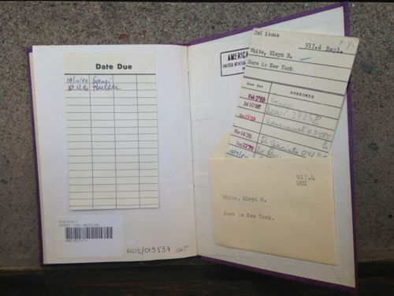

E.B. White
Here Is New York
“Here Is New York” in Rome.
E.B. White wrote the essay one year before it was published, as he says in his preface that also apologizes, in a way, for the things he has written about that have since passed. It is an odd preface for anyone reading the essay 70 years after its publication because so much more has (most likely) changed about New York City than the boom breaking and the Lafayette Hotel being torn down. Perhaps E.B. White was anticipating his readers 70 years hence and was unsure of his timeless descriptions—though how could he have been when his prose is so swift and solid?
[New York] carries on its lapel the unexpungeable odor of the long past, so that no matter where you sit in New York you feel the vibrations of great times and tall deeds, of queer people and events and undertakings.
He writes about the people who move to New York City, “who have pulled up stakes somewhere and come to town, seeking sanctuary or fulfillment or some greater or lesser grail.” And what is New York today but a conglomerate of strangers, a place where people go to get lost in the crowd and to be equally found? White writes about the anonymity of the huge city, where large events happen without notice, events that would be enormous in smaller cities that residents would naturally be a part of. He writes about New York with the ease and elegance of a long familiarity.
A poem compresses much in a small space and adds music, thus heightening its meaning. The city is like poetry: it compresses all life, all races and breeds, into a small island and adds music and the accompaniment of internal engines. The island of Manhattan is without doubt the greatest human concentrate on earth, the poem whose magic is comprehensible to millions of permanent residents but whose full meaning will always remain illusive.
Unlike Didion’s New York City, White’s New York does not lose its charm and is unable to lose it. His words are saturated with his fascination and his enjoyment drips from them. It is a pleasure to read “Here Is New York” and to anticipate whatever New York City I will find come January.

· · · · · · · · · · · · · · · · · · · ·